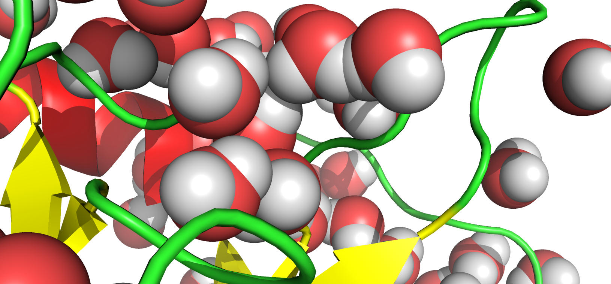
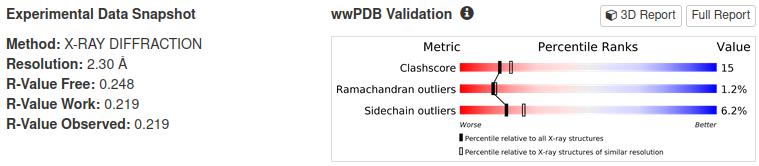
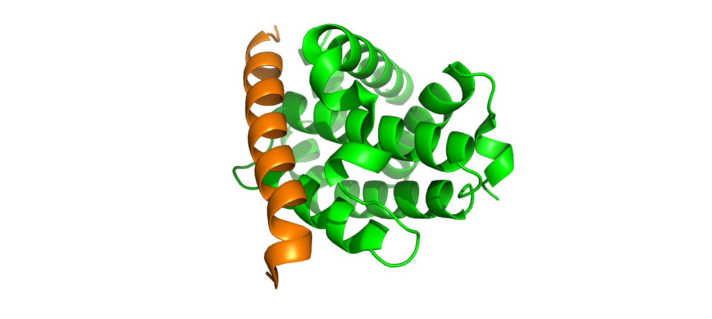
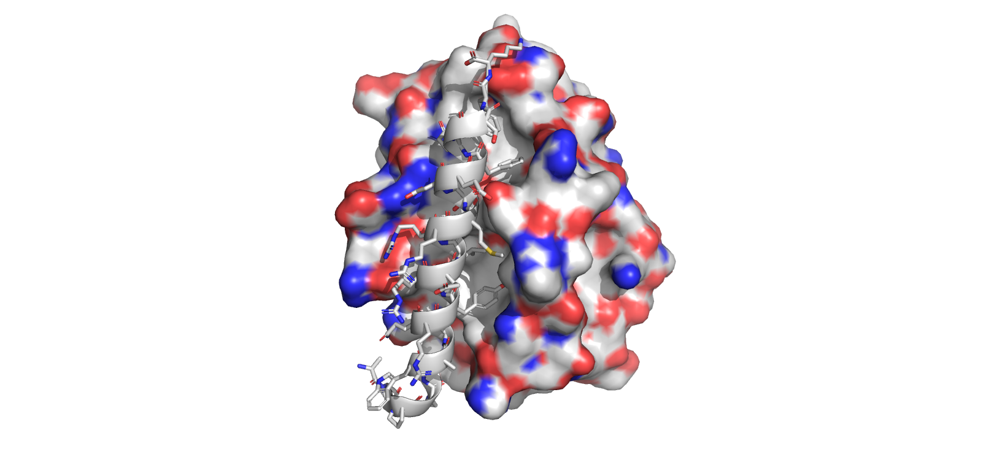
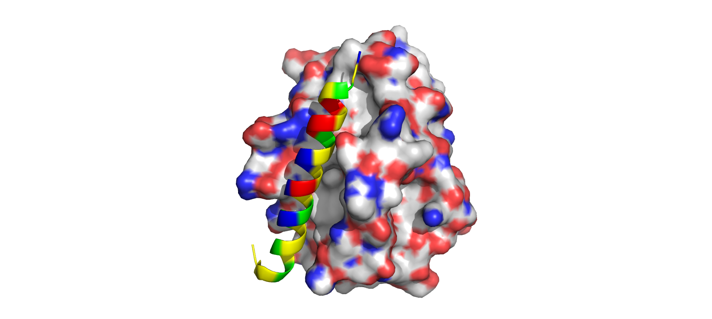
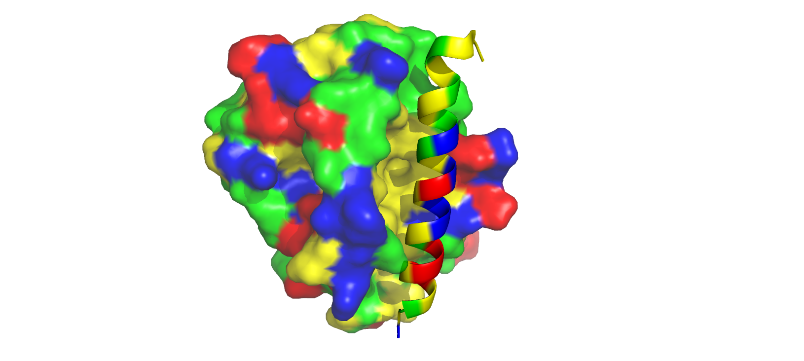
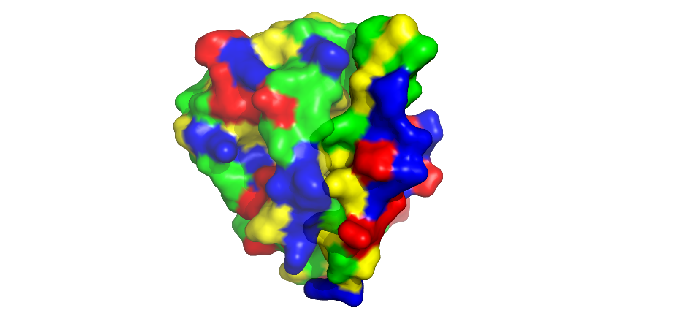

TP Visualisation: Introduction à PyMOL
Question 1: Choix de la bonne représentation
- Acide aminé
Un acide aminé est défini par une liaison peptidique et une chaîne latérale dont la composition en certains groupements chimiques définissent sa spécificité. Ce sont donc des caractéristiques chimiques qui seraient plus pertinemment vues avec une représentation sticks qui laissent voir les liaisons et les types d’atomes.
- Repliement d’une protéine
Pour voir le repliement d’une protéine, nous cherchons à visualiser le mouvement global de sa structure. En général choisir l’échelle de la structure secondaire permet cela sans aller trop en détails. Cela correspond à la représentation cartoon.
- Cavité d’une protéine
Pour voir la cavité d’une protéine, nous allons choisir la représentation surface car elle permet de voir le volume “réel” de la cavité.
Question 2: Critique de la reconstruction des atomes de H

Nous voyons que la construction des hydrogènes n’est pas fiable car nous avons des clashs entre plusieurs atomes d’hydrogène. Cela est causé par la sélection aléatoire des atomes d’hydrogène sans prise en compte de l’énergie du système conduisant à des représentations non raisonnables.
Question 3 : Méthode expérimentale d’obtention de la structure 2BZW
Pour obtenir des informations plus complètes sur la protéine, j’ai consulté sa page dédiée sur dans la Protein Data Bank.
Nous trouvons ici les informations sur le type de méthode utilisée et la résolution obtenue pour la structure:

Sur cette même page, nous voyons que cette entrée PDB contient 2 chaînes:
- APOPTOSIS REGULATOR BCL-X - Chaîne A de 211 résidus.
- BCL2-ANTAGONIST OF CELL DEATH - Chaîne B de 27 résidus.
Elles ont été colorées différemment et les molécules d’eau ont été cachées.
PyMOL
color green, chain A
color orange, chain B
hide everything, solvent
Nous voyons que la structure est constituée d’hélices alpha et de random coils uniquement.
Question 4: Représentation de l’interaction entre Bcl-xl et Bad
PyMOL
# Représentation de Bcl-xl en surface
show surface, chain A
# Coloration de la surface de Bcl-xl en fonction du type d'atome
util.cbaw 2bzw
# Extraction de la chaîne B dans un autre objet
extract bad, chain B
# Affichage et coloration des sticks de bad en fonction du type d'atome
show sticks, bad
util.cbaw badNous obtenons la structure suivante:

Q5: Étude de l’amphiphilicité de Bad et de sa position par rapport à Bcl-xl
PyMOL
# Coloration des résidus polaires en représentation cartoon
set cartoon_color, green, bad and resn Ser+Thr+Cys+Asn+Gln+Tyr+Trp
# Coloration des résidus chargés positivement en représentation cartoon
set cartoon_color, blue, bad and resn Lys+Arg+His
# Coloration des résidus chargés négativement en représentation cartoon
set cartoon_color, red, bad and resn Glu+Asp
# Coloration des résidus hydrophobes en représentation cartoon
set cartoon_color, yellow, bad and resn Ala+Leu+Ile+Met+Gly+Pro+Phe+Val
# Répétition avec addition de surface pour bad et modification de Bcl-xl
show surface, bad
set surface_color, green, resn Ser+Thr+Cys+Asn+Gln+Tyr+Trp
set surface_color, blue, resn Lys+Arg+His
set surface_color, red, resn Glu+Asp
set surface_color, yellow, resn Ala+Leu+Ile+Met+Gly+Pro+Phe+Val
# Ajout de transparence pour Bcl-xl
set transparency, 0.3, 2BZWNous obtenons la structure suivante:

Pour la suite des png, le même point de vue a été utilisé (déplier le code ci-après).
Coordonnées du point de vue 1
PyMOL
set_view (\
0.362137228, -0.636589170, 0.680887997,\
-0.771259606, 0.205580443, 0.602406025,\
-0.523465276, -0.743292868, -0.416527152,\
0.000072557, 0.000105657, -139.344619751,\
57.309600830, 33.745716095, -2.188449860,\
108.961479187, 169.697738647, -20.000000000 )

Tout d’abord, nous voyons que Bad se situe au niveau de la cavité de Bcl-xl, ce que nous pouvions attendre étant donné le caractère antagoniste de Bad envers Bcl-xl. Si nous nous penchons sur les caractéristiques physico-chimiques de Bad, nous voyons que la face qu’il présente à la protéine est constituée majoritairement de résidus hydrophobes (jaune) et minoritairement de résidus polaires (vert). Cela constitue une face à caractère hydrophobe, dont une proportion minoritaire est résidus polaire reste nécessaire pour la stabilité de Bad. Pour la face opposée à Bcl-xl, nous voyons une majorité de résidus chargés (positifs en bleu et négatifs en rouge) constituant ainsi une face à composante hydrophile majoritairement. Nous avons donc une hélice amphiphile présentant une face hydrophobe et une face hydrophile. Sur Bcl-xl, nous voyons que l’intérieur de la cavité présente une surface majoritairement hydrophobe et des bords présentant des résidus chargés donc hydrophiles. Cette adéquation avec Bad va donc permettre une interaction de la face hydrophobe de Bad avec le sein de Bcl-xl qui une fois insérée aura probablement une interaction supplémentaire avec les bords de la cavité de Bcl-xl.
Question 6: Impact de la mutation de la position L109 de Bad en lysine
On nous a fourni des valeurs d’angles \(\phi=-58.3°\) et \(\psi=-41.1°\). Ce sont des valeurs que l’on peut attribuer à une structure secondaire de type hélice \(\alpha\) dont les valeurs de \(\phi\) et \(\psi\) varient autour de \(-60°\pm15°\). Nous voyons que Bad est effectivement constitué d’une hélice \(\alpha\) donc les valeurs données sont normales.
Établissement d’un nouveau point de vue:
Coordonnées du point de vue 2
PyMOL
set_view (\
-0.207732961, -0.338437825, 0.917770863,\
-0.963956296, 0.230260819, -0.133277372,\
-0.166222453, -0.912376106, -0.374076307,\
0.000332914, 0.000134461, -139.348693848,\
57.559246063, 33.350948334, -1.424201965,\
108.961479187, 169.697738647, -20.000000000 )PyMOL
# Sélection de la leucine 109
select leu109, resid 109 and bad
# Sélection des résidus à 6A de la L109
select res_6A, byres leu109 around 6 and 2BZW